Augmentation Guide
The following shows three ways to generate synthetic images:
- Background Pattern Creator (Variant 1)
- Variant 2 Python code
An example of the current effects used in the generation is shown below:
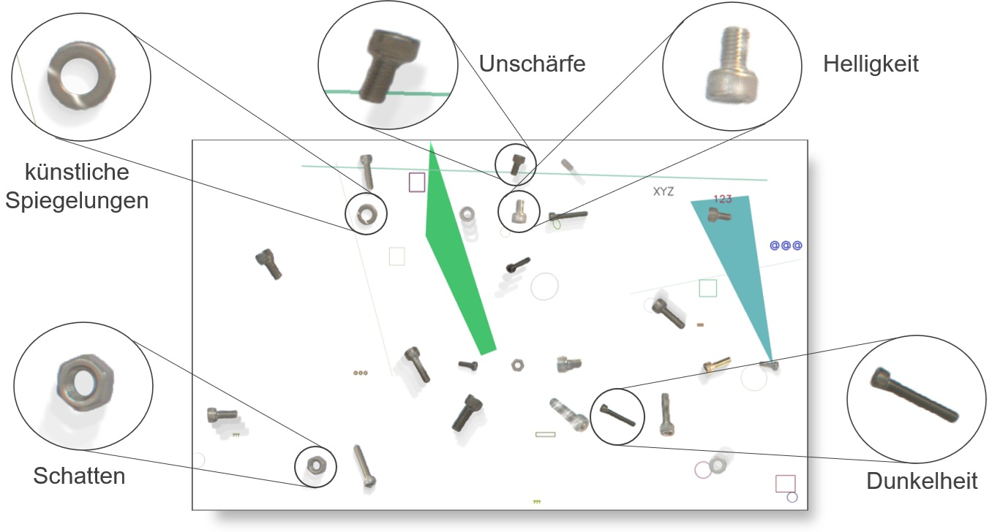
Background Pattern Creator - User Interface Documentation
Overview Background Pattern Creator
The Background Pattern Creator is a GUI application built with Python Tkinter that allows users to create tiled background patterns from individual images. The tool is specifically designed to generate backgrounds with dimensions of 3076×1852 pixels, making it ideal for creating consistent background patterns for computer vision and image processing applications.
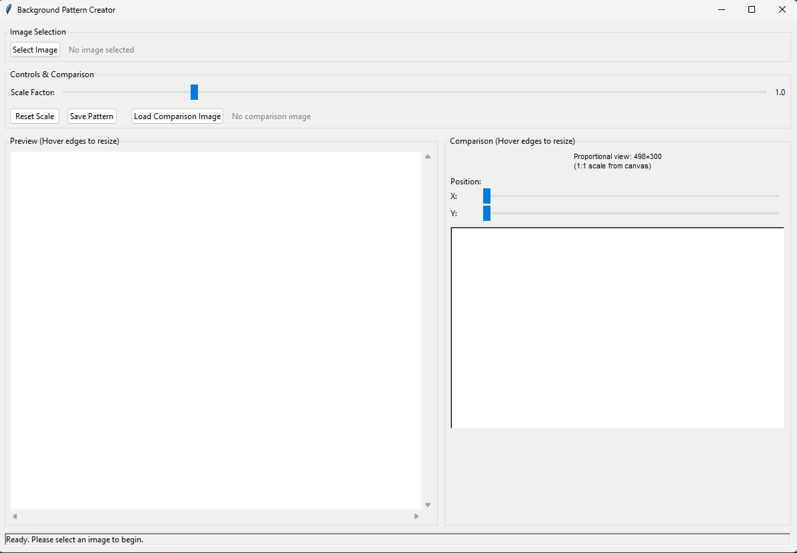
Interface Components
1. Image Selection Section
The top section of the interface handles image loading and file management.
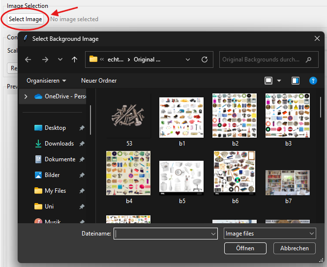
Components:
- Select Image Button: Opens a file dialog to choose background images
- File Label: Displays the currently selected image filename
Supported File Formats:
- PNG files (*.png)
- JPEG files (.jpg, .jpeg)
- BMP files (*.bmp)
- TIFF files (*.tiff)
- GIF files (*.gif)
2. Controls & Comparison Section
This section provides the main controls for pattern manipulation and comparison functionality.
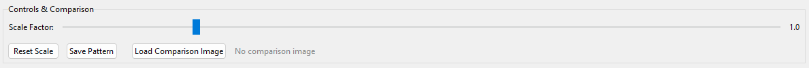
Scale Controls
- Scale Factor Slider: Adjusts the size of the base image from 0.1× to 5.0×
- Scale Value Display: Shows the current scale factor numerically
- Reset Scale Button: Instantly returns scale to 1.0×
Action Buttons
- Save Pattern Button: Exports the current pattern as a high-resolution image
- Load Comparison Image Button: Loads an image for overlay comparison
- Comparison Label: Shows the filename of the loaded comparison image
3. Preview Section (Resizable)
The main preview area shows how the tiled pattern will look at the target resolution.
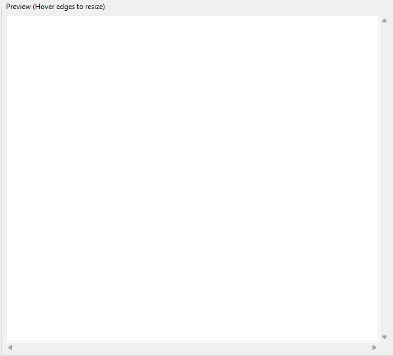
Features:
- Resizable Canvas: Hover near edges to see resize cursors
- Mouse Resize: Click and drag edges/corners to resize the preview area
- Scrollbars: Navigate through the full pattern when it's larger than the display area
- Real-time Updates: Pattern updates automatically when scale changes
Resize Interactions:
- Hover near edges (within 8 pixels) to see resize cursors
- Click and drag to resize canvas dimensions
4. Comparison Section (Resizable)
The right panel provides a detailed view of a specific area of the pattern with comparison capabilities.
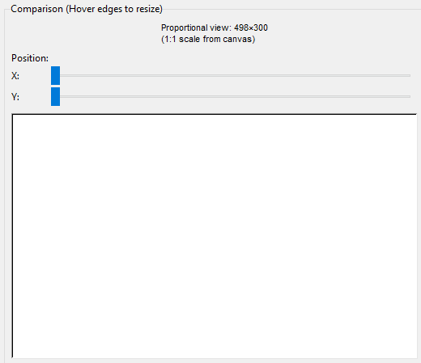
Position Controls
- X Position Slider: Horizontally moves the comparison viewport
- Y Position Slider: Vertically moves the comparison viewport
- Info Label: Shows current comparison area dimensions and scale
Comparison Canvas
- Proportional View: Maintains the correct aspect ratio of the target pattern
- Resizable: Use mouse to resize the comparison view
- Overlay Support: Displays comparison images centered in the view
- Scale Range: 0.5× to 2.0× for detailed inspection
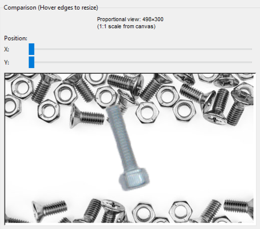
5. Status Bar
The bottom status bar provides real-time feedback about the application state.
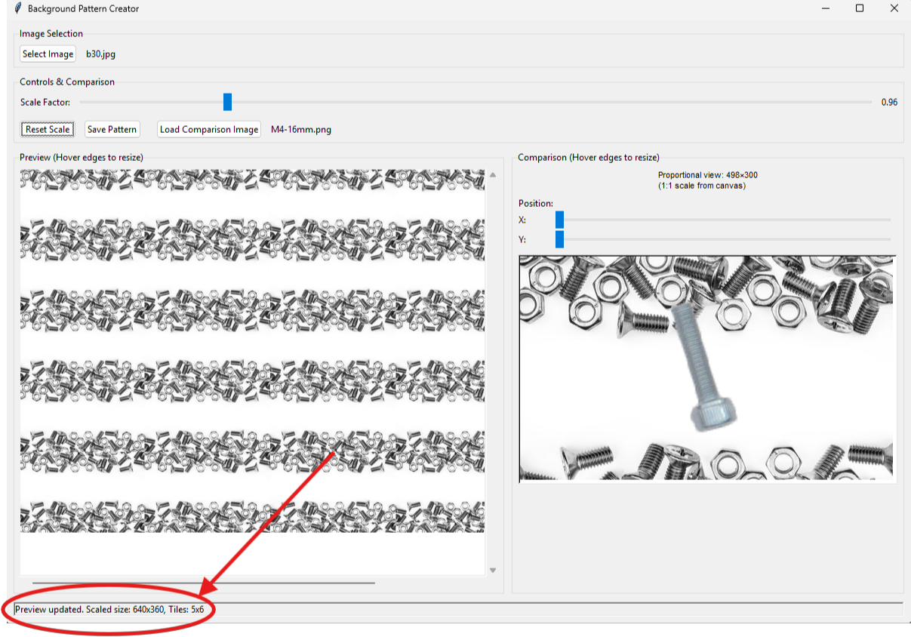
Information Displayed:
- Current image filename and dimensions
- Scale factor and tile count
- Operation status (loading, saving, errors)
- File save confirmations
Usage Workflow
Basic Pattern Creation
1. Load Background Image
- Click "Select Image" button
- Navigate to your background images
- Select desired background image
2. Adjust Scale
- Use the scale slider to resize the base image
- Preview updates automatically
- Observe tile count in status bar
3. Preview and Refine
- Resize preview canvas if needed for better visibility
- Use scrollbars to examine different areas
- Adjust scale until satisfied with pattern
4. Save Pattern
- Click "Save Pattern" button
- Choose location and filename
- Select format (PNG recommended for quality, JPEG for smaller files)
Advanced Features: Comparison Mode
1. Load Comparison Image
- Click "Load Comparison Image" button
- Select an object or component image
- Image appears centered in comparison view
2. Position Comparison Area
- Use X and Y position sliders to move the comparison viewport
- Find optimal background areas for your objects
- Resize comparison canvas for detailed inspection
3. Evaluate Placement
- Observe how objects appear against the background pattern
- Assess visibility and contrast
- Adjust background scale if needed for better object definition
Example Image
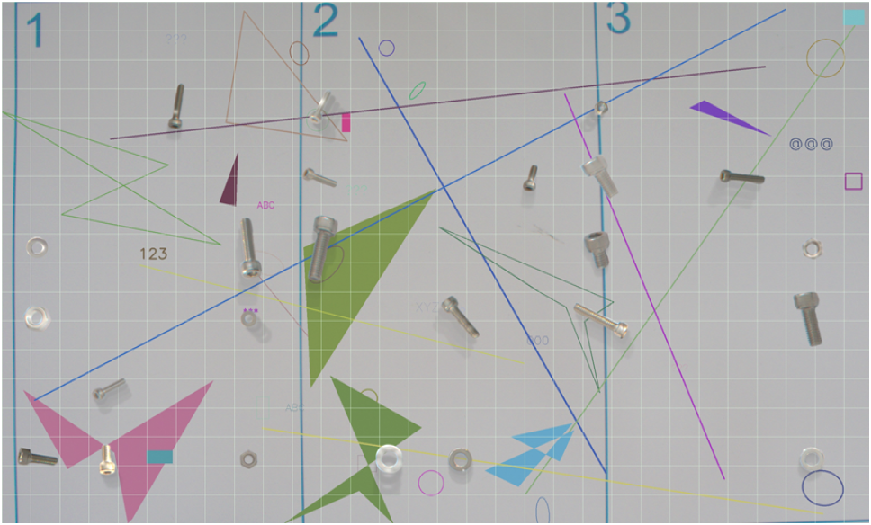
Variant 2 Python code
Current Augementations
- background objects (simple shapes and everyday objects)
- rotation, translation
- M6 and M4 screws, nuts and washers
- other screws, nuts and washers
Example of generated images
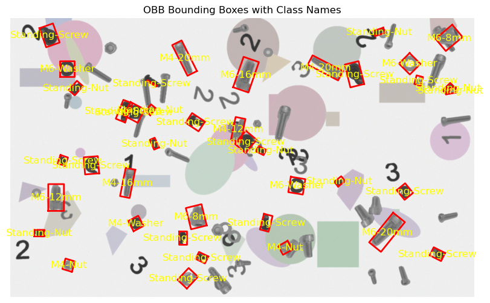
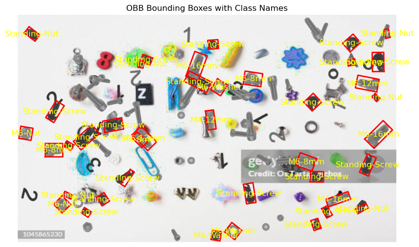
Usage
You can generate synthetic images using the synthetic_variants.variants_2.image_creation function showcased in the code/synthetic_variants/variants2/variants2_examples.py file.
Functions
create_distrubance_Canvas(mask_dir='disturbance_masks', number_generated_objects=30)
Create images with screws.
Parameters:
| Name | Type | Description | Default |
|---|---|---|---|
mask_dir
|
str
|
Directory containing the mask images |
'disturbance_masks'
|
number_generated_objects
|
int
|
Number of screws/nuts/washers (that are not a class) to be placed in the new image |
30
|
Returns: np.ndarray: The generated screw canvas.
Source code in code\synthetic_variants\variants_2\image_creation.py
101 102 103 104 105 106 107 108 109 110 111 112 113 114 115 116 117 118 119 120 121 122 123 124 125 126 127 128 129 130 131 132 133 134 135 136 137 138 139 140 141 142 143 144 145 146 147 148 149 150 151 152 153 154 155 | |
create_screwImage(mask_dir='Masks', output_dir='generated_ImageLabel', image_name='generated_image', number_generated_objects=40, number_generated_otherScrews=45, number_generated_shapes=10, simpleBackground=False, ImageSave=False, Png=True)
Create images with screws.
Parameters:
| Name | Type | Description | Default |
|---|---|---|---|
mask_dir
|
str
|
Directory containing the mask images |
'Masks'
|
output_dir
|
str
|
Directory to save the generated images |
'generated_ImageLabel'
|
image_name
|
str
|
Name of the generated image and label file |
'generated_image'
|
number_generated_objects
|
int
|
Number of screws/nuts/washers to be placed in the new image |
40
|
number_generated_otherScrews
|
int
|
Number of other screws/nuts/washers to be placed in the new image |
45
|
number_generated_shapes
|
int
|
Number of random shapes to be placed in the new image |
10
|
simpleBackground
|
bool
|
Whether to add a simple white background (True) or with random non technical objectes (False) |
False
|
ImageSave
|
bool
|
Whether to save the generated image |
False
|
Png
|
bool
|
Whether to save the generated image as PNG (True) or JPG (False) |
True
|
Returns: np.ndarray: The generated screw image.
Source code in code\synthetic_variants\variants_2\image_creation.py
159 160 161 162 163 164 165 166 167 168 169 170 171 172 173 174 175 176 177 178 179 180 181 182 183 184 185 186 187 188 189 190 191 192 193 194 195 196 197 198 199 200 201 202 203 204 205 206 207 208 209 210 211 212 213 214 215 216 217 218 219 220 221 222 223 224 225 226 227 228 229 230 231 232 233 234 235 236 237 238 239 240 241 242 243 244 245 246 | |
create_screws_CanvasAndLabel(mask_dir, label_path, number_generated_objects=30)
Create images with screws and YOLOv8 OBB labels.
Parameters:
| Name | Type | Description | Default |
|---|---|---|---|
mask_dir
|
str
|
Directory containing the mask images |
required |
label_path
|
str
|
Path to save the label file |
required |
number_generated_objects
|
int
|
Number of screws/nuts/washers to be placed in the new image |
30
|
Returns: np.ndarray: The generated screw canvas.
Source code in code\synthetic_variants\variants_2\image_creation.py
16 17 18 19 20 21 22 23 24 25 26 27 28 29 30 31 32 33 34 35 36 37 38 39 40 41 42 43 44 45 46 47 48 49 50 51 52 53 54 55 56 57 58 59 60 61 62 63 64 65 66 67 68 69 70 71 72 73 74 75 76 77 78 79 80 81 82 83 84 85 86 87 88 89 90 91 92 93 94 95 96 97 98 | |
display_obb_with_labels(image_path, label_path)
Reads an image and its corresponding YOLOv8 OBB label file, then displays the image with OBB bounding boxes and class names.
Parameters:
| Name | Type | Description | Default |
|---|---|---|---|
image_path
|
str
|
Path to the generated image. |
required |
label_path
|
str
|
Path to the label file in YOLOv8 OBB 8 points format. |
required |
Source code in code\synthetic_variants\variants_2\image_creation.py
249 250 251 252 253 254 255 256 257 258 259 260 261 262 263 264 265 266 267 268 269 270 271 272 273 274 275 276 277 278 279 280 281 282 283 284 285 286 287 288 289 290 291 292 293 294 295 296 297 298 | |
generate_screw_position_image(mask_dir='positionMasks', output_dir='positionImages', x_pos=10, y_pos=10, angle=0, Png=True)
Create images with screws and YOLOv8 OBB labels.
Parameters:
| Name | Type | Description | Default |
|---|---|---|---|
mask_dir
|
str
|
Directory containing the mask images |
'positionMasks'
|
output_dir
|
str
|
Directory to save the generated images and labels |
'positionImages'
|
image_name
|
str
|
Name of the generated image and label file |
required |
x_pos
|
int
|
X position to place the object |
10
|
y_pos
|
int
|
Y position to place the object |
10
|
angle
|
int
|
Angle to rotate the object (0-360°) |
0
|
Returns:
Source code in code\synthetic_variants\variants_2\image_creation.py
388 389 390 391 392 393 394 395 396 397 398 399 400 401 402 403 404 405 406 407 408 409 410 411 412 413 414 415 416 417 418 419 420 421 422 423 424 425 426 427 428 429 430 431 432 433 434 435 436 437 438 439 440 441 442 443 444 445 446 447 448 449 450 451 452 453 454 455 456 457 458 459 460 461 462 463 464 465 466 467 468 469 470 471 472 473 474 475 476 477 478 479 480 481 482 483 484 485 486 487 488 489 490 491 | |